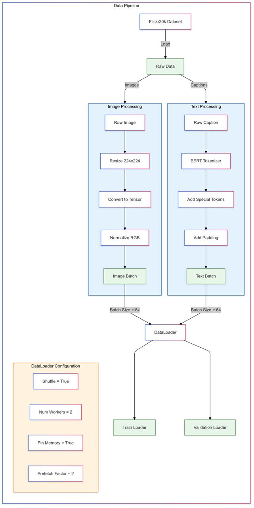
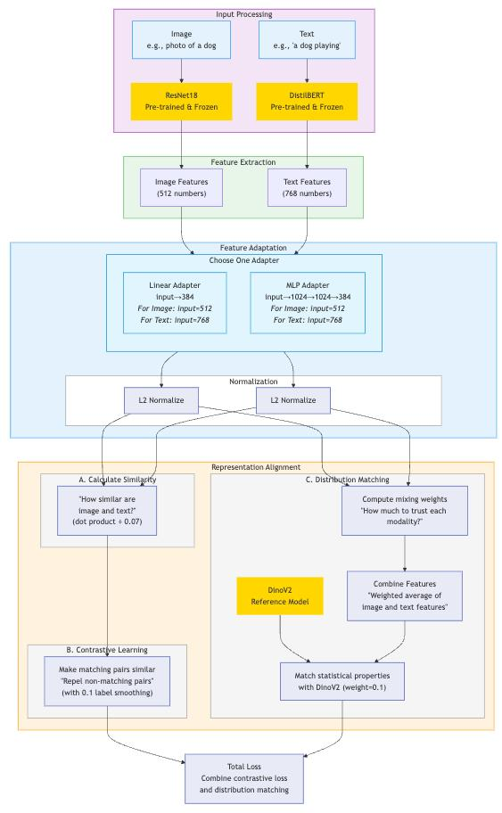
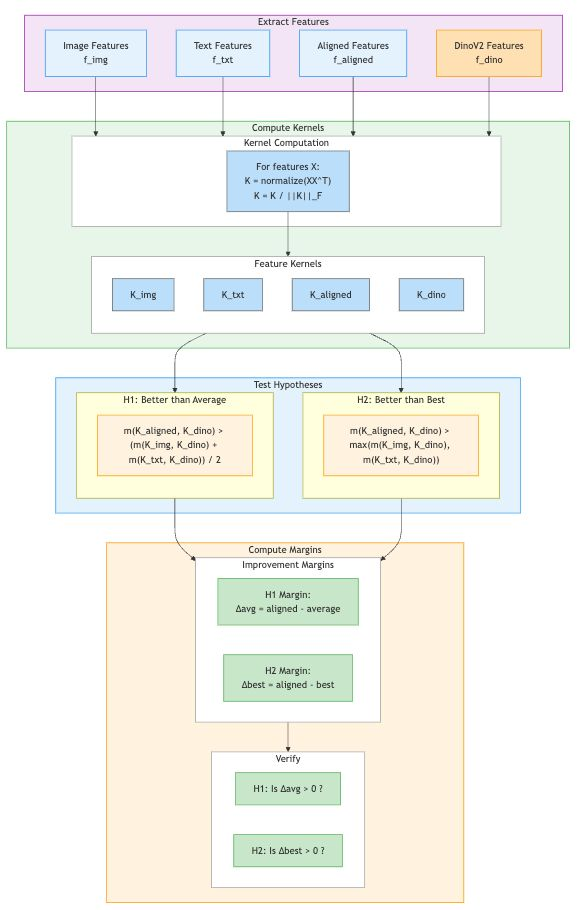

Introduction
Deep learning models are typically trained to transform raw data into representations optimized for specific tasks. Recently, two lines of research have inspired a deeper inquiry into the nature of these representations. The CLIP framework demonstrated the utility of aligning representations across modalities, using paired image-text data to train joint embeddings for cross-modal retrieval. Meanwhile, the Platonic Representation Hypothesis posits that performant models converge toward a shared statistical model of reality in their representation spaces, suggesting a potential universality underlying learned representations.
This project bridges these ideas by exploring whether representations from disparate pre-trained unimodal neural networks can be aligned into a shared multimodal latent space, inspired by the joint embedding approach of CLIP and motivated by the convergence hypothesis of Platonic Representations. The proposed framework uses frozen unimodal encoders with learned linear adapters to align representations across modalities. Our aim is to determine if such aligned representations better approximate those of larger, more performant models.
Inspired by the success of CLIP in aligning representations across modalities and the theoretical insights of the Platonic Representation Hypothesis, we propose a framework that aligns pre-trained unimodal encoders into a shared multimodal latent space using simple linear adapters. By leveraging frozen encoders such as ResNet-18 for images and DistilBERT for text, we aim to achieve alignment without retraining a larger state-of-the-art model like DINOv2, enabling scalability to new modalities with minimal overhead.

Motivation
Our approach is motivated by three key insights:
- Inspiration from CLIP: The CLIP framework demonstrated that cross-modal representations could be aligned through paired data and contrastive learning. However, it requires joint training of encoders, limiting extensibility to additional modalities. Our method decouples the encoders, focusing instead on aligning their outputs via lightweight adapters.
- Testing the Platonic Representation Hypothesis: This hypothesis posits that performant models converge toward a shared statistical model of reality in their representation spaces. By aligning diverse unimodal encoders, we provide a testbed for exploring whether this convergence can be achieved explicitly.
- Scalability and Modularity: Traditional multimodal models often require joint training on extensive datasets. By aligning frozen encoders post hoc, our framework supports modular integration of new modalities, enabling efficient experimentation.
Hypothesis
Our work is grounded in the following assumptions and/or hypotheses:
- A shared latent space exists where unimodal representations from different encoders can be aligned through linear transformations.
- Aligning these representations produces embeddings that closely approximate those of performant models, such as DINOv2, as measured by kernel alignment metrics.
- Multimodal alignment captures mechanisms of representation convergence, offering empirical evidence for the Platonic Representation Hypothesis.
Mathematical Framework
At the core of our project is the hypothesis that pre-trained unimodal representations can be aligned into a shared multimodal latent space. This section formalizes the mathematical structure underlying our framework, detailing how representations are extracted, aligned, and evaluated.
Multimodal Data Representation
Let the world generate raw multimodal data:
\[ \mathcal{D}_\text{world} = \left\{\left(\theta^{(i)}, \psi^{(i)}, \phi^{(i)}, \dots \right) \right\}_{i=1}^N, \quad \theta \in \mathcal{\Theta}, \psi \in \mathcal{\Psi}, \phi \in \mathcal{\Phi}, \dots \]
where \( \mathcal{\Theta}, \mathcal{\Psi}, \mathcal{\Phi} \) represent different modalities (e.g., image, text, audio), and \( \theta, \psi, \phi \) are specific instances of these modalities.
For simplicity, we focus on a two-modality setting with images (\( \mathcal{X} \)) and text (\( \mathcal{Y} \)):
\[ \mathcal{D}_\text{world} = \left\{\left(x^{(i)}, y^{(i)}\right)\right\}_{i=1}^N, \quad x \in \mathcal{X}, y \in \mathcal{Y}. \]

Learned Adapters
We use frozen pre-trained encoders to extract representations from each modality:
\[ X_\text{enc}: \mathcal{X} \rightarrow \mathbb{R}^{d_x}, \quad Y_\text{enc}: \mathcal{Y} \rightarrow \mathbb{R}^{d_y}, \]
where \( d_x \) and \( d_y \) are the embedding dimensions for images and text, respectively.
We use a pretrained ResNet-18 model pretrained on ImageNet1K as our frozen pretrained imaged encoder and a DistilBERT model pretrained on BookCorpus as our frozen text encoder.
To project these representations into a shared latent space \( \mathbb{R}^{d_e} \), we introduce learned adapters:
\[ W_x : \mathbb{R}^{d_x} \rightarrow \mathbb{R}^{d_e}, \quad W_y : \mathbb{R}^{d_y} \rightarrow \mathbb{R}^{d_e} \]
We explore both linear adapters and 2-layer MLP adapters. The adapted encoders:
\[ \begin{aligned} f_\text{image}: \mathcal{X} \rightarrow \mathbb{R}^{d_e}, \quad f_\text{image} &= W_x \circ X_\text{enc} \\ g_\text{text}: \mathcal{Y} \rightarrow \mathbb{R}^{d_e}, \quad g_\text{text} &= W_y \circ Y_\text{enc} \end{aligned} \]
\( f_\text{image} \) and \( g_\text{text} \) map images and text, respectively, to the shared latent space \( \mathbb{R}^{d_e} \).
Dual-Encoder Contrastive Objective
To align the representations, we use a dual-encoder contrastive loss.
Homework 4

Our loss encourages is designed to encourage representations from matching pairs to be similar while pushing apart representations from non-matching pairs:
\[ \mathcal{L}_{\text{contrastive}} = -\frac{1}{N} \sum_{i=1}^N \log \frac{\exp\left(f_\text{image}(x^{(i)}) \cdot g_\text{text}(y^{(i)}) / \tau\right)}{\sum_{j=1}^N \exp\left(f_\text{image}(x^{(i)}) \cdot g_\text{text}(y^{(j)}) / \tau\right)}, \]
where \( \tau \) is the temperature parameter that scales the similarity scores.
Our use of the dual-encoder contrastive objective is a unique extension of traditional contrastive learning. Typically, contrastive learning applies to different "views" generated through transformations or augmentations of samples from a single modality. In our approach, we generalize this concept by treating different modalities (image and text, in this case) as distinct views of a hypothesized common underlying reality, inspired by the Platonic Representation Hypothesis.
Connection to PRH
The Platonic Representation Hypothesis (PRH) posits that representations from different modalities converge toward a shared Platonic representation. In our framework, we hypothesize that contrastive alignment between the unimodal image \( f_{\text{image}} \) and text \( g_{\text{text}} \) encoders can drive this convergence toward the Platonic representation.
In the ideal case of perfect contrastive alignment (achieved by minimizing the diameter and maximizing the margin), the outputs of \( f_{\text{image}}(x) \) and \( g_{\text{text}}(y) \) for positive pairs would map to the same embedding vector in the shared latent space i.e. \( f_{\text{image}}(x^{(i)}) = g_{\text{text}}(y^{(i)}) \)
Our thesis is that this limiting vector represents the Platonic representation. However, in practice, due to finite data, model capacity, and noise, the outputs of \( f_{\text{image}} \) and \( g_{\text{text}} \) are typically close (as measured by the \( L_2 \)-distance on the unit hypersphere \( \mathbb{S}^{d_e-1} \)) but not identical i.e. \( f_{\text{image}}(x^{(i)}) \approx g_{\text{text}}(y^{(i)}) \).
Given this, we define our aligned multimodal encoder \( h_\text{multi} \) as a function that "averages" (i.e takes a convex combination of) the embeddings output by the adapted image and text encoders, i.e.:
\[ h_\text{multi}: \mathcal{X} \times \mathcal{Y} \rightarrow \mathbb{R}^{d_e}, \quad h_\text{multi}(x, y) = \lambda \cdot f_{\text{image}}(x) + (1 - \lambda) \cdot g_{\text{text}}(y) \]
where \( \lambda \in [0, 1] \) is a learnable hyperparameter that controls the balance between the image and text embeddings.
We call the output \( h_\text{multi}(x^{(i)}, y^{(i)}) \) the aligned multimodal representation and claim that this is an approximation of the Platonic representation of the \(i\)-th data point. While the true Platonic representation is unknown, we follow the PRH conjecture that performant models (such as DINOv2) produce representations that are converging toward it. We use the features extracted by a pretrained DINOv2-small backbone as a proxy for the Platonic representation.
Performant Model Benchmark
We will refer to the function implemented by the DINOv2-small feature extractor as the DINOv2-small encoder:
\[ \text{DINOv2}: \mathcal{X} \rightarrow \mathbb{R}^{d_e}. \]
This emphasizes its role as another image encoder that serves as a reference or benchmark for evaluating our aligned representations. We evaluate the quality of our aligned multimodal encoder \( h_\text{multi} \) its representations to those of the DINOv2-small encoder using a kernel alignment metric.
Kernel Alignment Metric
We characterize representations in terms of their kernels, which capture the similarity between data points. Two representations are considered aligned if their kernels are similar for corresponding inputs. For example, if the text encoder \( g_{\text{text}} \) is aligned with the image encoder \( f_{\text{image}} \), the similarity between text representations of "apple" and "orange" should correspond closely to the similarity between their image representations:

To quantify this alignment, we use the mutual \(k\)-nearest neighbor (mutual-KNN) kernel alignment metric \( m \), as introduced by Huh et al. (2024). We define the kernels as:
-
Unimodal Kernels:
\[ K_X(i, j) = \langle f_{\text{image}}(x^{(i)}), f_{\text{image}}(x^{(j)}) \rangle, \quad K_Y(i, j) = \langle g_{\text{text}}(y^{(i)}), g_{\text{text}}(y^{(j)}) \rangle \]
-
Aligned Multimodal Kernel:
\[ K_{\text{align}}(i, j) = \langle h_\text{multi}(x^{(i)}, y^{(i)}) , h_\text{multi}(x^{(j)}, y^{(j)}) \rangle, \]
-
Performant Model Kernel:
\[ K_\text{DINOv2}(i, j) = \langle \text{DINOv2}(x^{(i)}), \text{DINOv2}(x^{(j)}) \rangle \]
Before Training
We compute the alignment metrics for the unimodal kernels relative to the performant model kernel:
\[ m(K_X, K_{\text{DINOv2}}), \quad m(K_Y, K_{\text{DINOv2}}). \]
After Training
We evaluate the mutual-KNN alignment for the aligned multimodal kernel against the performant model kernel:
\[ m(K_{\text{align}}, K_{\text{DINOv2}}). \]
Key Hypothesis
We hypothesize that the aligned multimodal kernel achieves higher similarity with \( K_{\text{DINOv2}} \) than the average of the unimodal kernels:
\[ m(K_{\text{align}}, K_{\text{DINOv2}}) > \text{avg}\left(m(K_X, K_{\text{DINOv2}}), m(K_Y, K_{\text{DINOv2}})\right). \]
A stronger version of this hypothesis posits that the aligned multimodal kernel surpasses even the best unimodal kernel:
\[ m(K_{\text{align}}, K_{\text{DINOv2}}) > \max\left(m(K_X, K_{\text{DINOv2}}), m(K_Y, K_{\text{DINOv2}})\right). \]
This would suggest an interesting emergent-like property where the whole (multimodal representation) is greater than either its parts (unimodal representations) alone,
Methodology
All code for this project is available in our Google Colab notebook.
Data Pipeline
We construct our world dataset \( \mathcal{D}_\text{world} \) from the first 12,800 samples of the Flickr30k dataset, which contains paired image-caption samples. Each image in Flickr30k dataset is associated with 5 captions, but we use only the first caption so that we have a single postive pair per data point \( x^{(i)}, y^{(i)} \).
- Image Processing:
- Resize to 224x224.
- Normalize using ImageNet statistics.
- Convert to tensors for ResNet-18.
- Text Processing:
- Tokenize with DistilBERT tokenizer.
- Pad/truncate to 64 tokens.
- Convert to tensors for DistilBERT.
- Data Loading:
- Batch size: 128.
- Train-validation split: 75%-25%.
Expand for schematic of data pipeline.
Model Architecture
The architecture uses frozen pre-trained encoders and trainable adapters for aligning representations in a shared multimodal space.
- Frozen Encoders:
- Image: ResNet-18 (output dimension: \( d_x = 512\)).
- Text: DistilBERT (output dimension: \( d_y = 768\)).
- Adapters \( \left( W_x, W_y \right) \):
- Linear Adapter: Matrix multiplication plus bias term.
- MLP Adapter: 2-layer MLP with GELU and LayerNorm.
- Output dimension: \( d_e = 768 \).
- Reference Model: DINOv2-small (output dimension: \( d_e = 768 \)).
Training Procedure
We train the adapters to align image and text representations using the dual-encoder contrastive loss. Both linear and 2-layer MLP adapters are trained for 15 epochs on the Flickr30k dataset using a temperature scaling value of \( \tau = 0.07 \) in the contrastive loss. Other releavnt hyperparameter settings are:
- Optimizer: AdamW
- Learning Rate: \(5 \times 10^{-5}\) (cosine decay with warmup).
- Gradient Clipping: 1.0.
- Weight Decay: 0.01.
Expand for schematic of training pipeline.
Evaluation Metrics
We evaluate the alignment performance for the two types of adapters using the mutual-KNN kernel alignment metric \( m \). Specifically, we compute the following three values:
- Unimodal Alignment:
- \( m(K_X, K_{\text{DINOv2}}) \): Alignment of the image encoder \( f_\text{image} \) kernel to the DINOv2 kernel.
- \( m(K_Y, K_{\text{DINOv2}}) \): Alignment of the text encoder \( g_\text{text} \) kernel to the DINOv2 kernel.
- Multimodal Alignment:
- \( m(K_{\text{align}}, K_{\text{DINOv2}}) \): Alignment of the multimodal encoder \( h_\text{mult} \) kernel to the DINOv2 kernel.
We use these values to test our two key hypotheses:
- Weak Hypothesis \(H_1\): The aligned multimodal kernel achieves higher similarity with the DINOv2 kernel than the average of the unimodal kernels: \[ m(K_{\text{align}}, K_{\text{DINOv2}}) > \text{avg}(m(K_X, K_{\text{DINOv2}}), m(K_Y, K_{\text{DINOv2}})). \]
- Strong Hypothesis \(H_2\): The aligned multimodal kernel surpasses even the best unimodal kernel: \[ m(K_{\text{align}}, K_{\text{DINOv2}}) > \max(m(K_X, K_{\text{DINOv2}}), m(K_Y, K_{\text{DINOv2}})). \]
Expand for schematic of hypothesis testing.
Results
Kernel Alignment Improves with Training
Our first key finding is that the mutual-KNN kernel alignment metric improves after training for both the linear and MLP adapters. This demonstrates that our contrastive alignment objective effectively aligns the image and text representations.

We use PCA to visualize the alignment process between the DINOv2-small embeddings and the aligned multimodal embeddings. First, we apply the DINOv2-small encoder to our test set and compute the principal components (PCs) of the resulting \(3200 \times 784\) matrix of embeddings. During training, at each epoch, we project the aligned multimodal embeddings onto the same PCs and plot the first two principal component scores for both sets of embeddings. This 2D visualization shows how the multimodal representations evolve to become more aligned with the DINOv2 embeddings.

Key Hypotheses Supported
Our results show that both the weak and strong hypotheses are supported. This indicates that the multimodal representations, which incorporate both image and text information, are more closely aligned with the DINOv2 embeddings than either the image or text representations alone.

This result is particularly compelling given that DINOv2 is a self-supervised vision model trained without any text supervision. The fact that multimodal alignment with text leads to representations that are more similar to DINOv2, we believe, supports the Platonic Representation Hypothesis — suggesting a shared statistical model of reality across modalities.
Discussion
In this work, we investigated whether representations from pre-trained unimodal encoders can be aligned into a shared multimodal latent space using lightweight adapters. Our experiments provide evidence supporting the Platonic Representation Hypothesis (PRH) proposed by Huh et al. (2024). Specifically, we observed that aligning image and text embeddings via contrastive learning leads to multimodal representations that are more closely aligned with the DINOv2-small features compared to unimodal representations alone. Our alignment approach was inspired by the CLIP framework (Radford et al., 2021), which demonstrated the power of aligning cross-modal representations using paired image-text data. Unlike CLIP, which requires joint training of encoders, our method achieves alignment post hoc with frozen encoders and lightweight adapters, providing a scalable alternative.
Key Insights
Our experiments revealed three key insights:
- Surprising Cross-Modal Alignment: Despite DINOv2-small being a self-supervised vision model with no text supervision, aligning image and text representations improved their similarity to DINOv2 embeddings. This suggests an underlying universality in representation spaces, supporting the PRH's notion of convergence toward a shared statistical model of reality. The result is notable as it implies that contrastive alignment between modalities — even when one modality was not part of the performant model's training — can enhance representational alignment.
- Creative Reformulation of Contrastive Views: Our use of the dual-encoder contrastive objective generalizes the traditional notion of “views” from single-modality augmentations to different modalities representing distinct views of a hypothesized common underlying reality. This reformulation, inspired by the Platonic Representation Hypothesis, is a unique perspective that distinguishes our framework from conventional contrastive learning approaches.
- Empirical Support for Key Hypotheses: Our results validated both the weak and strong hypotheses formulated in the mathematical framework. The aligned multimodal kernel \( K_{\text{align}} \) consistently surpassed the average and the best of the unimodal kernels (\( K_X \) and \( K_Y \)), highlighting that the combined information from multiple modalities can lead to representations that better approximate those of performant models.
Non-Trivial Alignment to DINOv2
Notably, our multimodal encoder was not explicitly optimized to produce embeddings that match those from the DINOv2-small feature extractor. The dual-encoder contrastive loss we used does not include DINOv2 in any way. This makes it compelling that the representations produced by our aligned encoder \( h_{\text{multi}}(x, y) \) are more similar to DINOv2-small embeddings than the unimodal image encoder alone. This refutes the possibility that the multimodal encoder is simply regurgitating the image encoder's output and ignoring the text modality. The results demonstrate the true benefit of multimodal alignment.
Potential Limitations
- Dataset Bias: The Flickr30k dataset primarily contains images and captions depicting people in everyday scenarios. This limited diversity may constrain the generalizability of our findings. Exploring alignment on more varied datasets could yield further insights.
- Restricted Modalities: Our study focused on aligning image and text modalities. Extending this framework to incorporate audio or video data would provide a more comprehensive test of the alignment mechanism and PRH.
Conclusion
Our work demonstrates that multimodal alignment via contrastive learning is a promising approach for achieving efficient, scalable representation learning. The observed convergence toward DINOv2 embeddings supports the notion of a universal Platonic representation, where aligning multiple modalities reveals shared underlying structures in representation spaces. This result builds upon insights from both the CLIP framework and the Platonic Representation Hypothesis, underscoring the potential of multimodal alignment in advancing our understanding of representation learning.
Future Directions
1. Leveraging Multiple Captions for Alignment
In our current work, we use only the first caption from the Flickr30k dataset as a positive anchor for each image. To improve alignment quality, we will utilize all five captions per image. For each data point \( i \), we redefine the input as a sixtuplet \( (x^{(i)}, y_1^{(i)}, y_2^{(i)}, \dots, y_5^{(i)}) \), where \( y_k^{(i)} \) represents the \( k \)-th caption.
The contrastive loss then becomes:
\[ \mathcal{L}_{\text{multi-caption}} = -\frac{1}{N} \sum_{i=1}^N \log \frac{\exp\left(\frac{1}{5\tau} \sum_{k=1}^5 f_\text{image}(x^{(i)}) \cdot g_\text{text}(y_k^{(i)})\right)}{\sum_{j=1}^N \exp\left(\frac{1}{5\tau} \sum_{k=1}^5 f_\text{image}(x^{(i)}) \cdot g_\text{text}(y_k^{(j)})\right)}. \]
This approach leverages the diversity of captions to potentially create more robust and semantically aligned representations.
2. Scaling to Richer Multimodal Datasets
We plan to extend our experiments beyond images and text by integrating a third modality, such as audio. For example, using the VGGSound dataset and a pre-trained audio encoder like Wav2Vec, we can evaluate whether incorporating audio further improves kernel alignment metrics compared to the two-modality setting.
After that, we consider expanding our approach to as many modalities as there exists a suitable dataset for. To achieve this, we will generalize the dual-encoder contrastive loss to a multi-encoder contrastive loss for \( M \) modalities. Specifically, the loss can be expressed as:
\[ \mathcal{L}_{\text{multi-encoder}} = -\frac{1}{N} \sum_{i=1}^N \log \frac{\exp\left( \sum_k \prod_{m=1}^M ( \mathbf{f_m^{(i)}} )_k / \tau\right)}{\sum_{j=1}^N \exp\left(\sum_k \prod_{m=1}^M ( \mathbf{f_m^{(j)}} )_k / \tau\right)}, \]
where \( ( \mathbf{f_m^{(i)}} )_k \) represents the \( k \)-th entry in the embeddings of the \( i \)-th data point produced by the \( m \)-th modality encoder, and \( \prod_{m=1}^M \) is an element-wise product.
A potential challenge is that VGGSound provides video IDs and timestamps rather than direct downloads, complicating dataset acquisition.
3. Zero-Shot Evaluation with Pre-Trained Heads
We plan to evaluate the aligned representations directly using pre-trained classifier heads (e.g., those available in the DINOv2 GitHub repository). Specifically, we will replace DINOv2-small's feature extractor with our aligned multimodal encoder \( h_\text{multi} \) and measure classification performance on tasks like ImageNet. This approach will assess the quality of the aligned embeddings in a purely zero-shot setting.